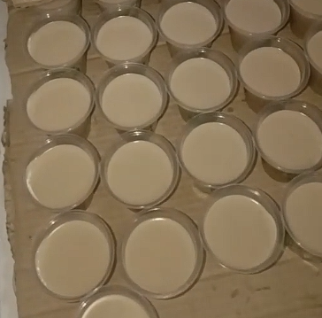

Línea Humana
Nutrición Funcional y Colágeno Natural para la Familia
Regeneración y Salud Natural
Nuestra gelatina de colágeno artesanal es obtenida mediante cocción lenta a presión de pata de res y pollo. Un producto libre de conservantes químicos, refinados y azúcares añadidos, formulado para ser altamente bioasimilable por el cuerpo humano.

Salud Articular y Ósea
Ayuda a regenerar el cartílago, reduce los dolores articulares y previene el desgaste en personas deportistas, adultos mayores y niños en etapa de crecimiento.
Piel, Cabello y Uñas
Aporta firmeza y elasticidad natural a la piel, fortaleciendo al mismo tiempo el folículo capilar y previniendo el quiebre de uñas.
Sistema Digestivo
Por ser un alimento proteico puro y blando, recubre la mucosa gástrica y facilita la digestión sin causar pesadez ni acidez.
¿Cómo y cuándo consumirlo?
Dosis recomendada: 1 vaso o porción diaria (preferiblemente en ayunas o entre comidas como snack nutritivo).
Conservación: Mantener refrigerado entre 2 °C y 6 °C para conservar su consistencia de gelatina firme y natural.